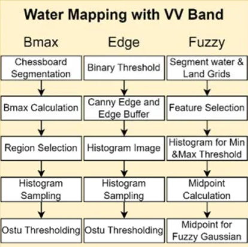

텔레픽스 (TelePIX) · 데이터사이언스부문TelePIX · Data Science Division
신현진Hyunjin Shin
위성영상 분석 연구원Satellite Imagery Analyst · Earth Observation
SAR와 광학 위성으로 재난·환경·산업활동을 정량화합니다. 홍수·산사태·지반침하·산불·기름유출부터 해빙과 제련소 가동까지, 원시 전파 신호를 의사결정에 쓸 수 있는 지도와 수치로 바꾸는 일을 합니다.I turn SAR and optical satellite data into decision-ready maps and numbers — floods, landslides, ground subsidence, wildfires, oil spills, Arctic sea ice, and industrial activity.
소개About
위성에서 내려오는 전파와 빛을 물리적으로 해석해, 지상에서 실제로 무슨 일이 일어났는지를 수치로 만드는 일을 합니다. SAR 간섭측량으로 밀리미터 단위 지반 변위를 재고, SWIR 밴드로 용광로가 돌아가는지를 보고, 후방산란 분포에서 침수 경계를 자동으로 찾아냅니다.
재난 대응처럼 속도가 전부인 일과, 검보정처럼 정확도가 전부인 일을 모두 해왔습니다. 결과가 재현되지 않으면 재현되지 않았다고 적고, 원인을 찾지 못했으면 찾지 못했다고 적습니다. 그 기록이 다음 사람의 출발점이 된다고 생각합니다.
I work on turning the radio waves and light coming down from satellites into numbers about what actually happened on the ground — measuring millimetre-scale deformation with SAR interferometry, reading furnace activity off SWIR bands, finding inundation boundaries automatically in backscatter distributions.
I have worked where speed is everything, as in disaster response, and where accuracy is everything, as in sensor calibration. When a result does not reproduce, I write that it did not. When I cannot find the cause, I write that too — because that record is where the next person starts.
SAR 분석SAR
광학 분석Optical
데이터 · 개발Data & Code
도메인Domain
프로젝트Projects
각 카드를 누르면 배경 · 방법 · 결과 그림 · 한계까지 상세 페이지로 이동합니다.Each card opens a detail page: background, method, result figures and limitations.

Sentinel-1 SAR 기반 홍수 탐지 알고리즘Automated Flood Mapping from Sentinel-1 SAR
구름을 뚫고 보는 SAR의 장점을 살려, 지역마다 임계값을 손으로 맞추지 않아도 되는 자동 침수 탐지 파이프라인을 만들었다. 국내외 6개 이상 지역에서 검증했다.An automatic inundation-mapping pipeline that removes the need for hand-tuned, per-region thresholds — validated on six-plus flood events worldwide.

InSAR 기반 지반침하 · 산사태 모니터링Ground Subsidence & Landslide Monitoring with InSAR
밀리미터 단위 지표 변위를 위성으로 잡아내는 InSAR 처리 역량을 사내에 구축했다. SBAS와 PS 두 계열을 모두 구현하고 서로 교차검증했다.Built in-house InSAR capability for millimetre-scale surface displacement — implementing both SBAS and Persistent Scatterer approaches and cross-validating them.

국산 SAR 위성 엄밀센서모델 기하보정Rigorous Sensor Model Geocoding for a Domestic SAR Satellite
국산 X-band SAR 위성은 어떤 상용·공개 소프트웨어도 지원하지 않는다. 파일 안의 궤도·타이밍 정보만으로 거리-도플러 센서모델을 직접 세워 12씬을 5 m 격자로 지오코딩했다.No commercial or open SAR software supports Korea's X-band smallsat. I built the range-Doppler sensor model from scratch — using only the orbit and timing inside the file — and geocoded 12 scenes onto a 5 m grid.

해안사구 다중기법 SAR 분석 (InSAR · OT · ACD)Coastal Dune Monitoring with Three SAR Techniques
국산 X-band와 Sentinel-1 C-band에 InSAR·오프셋트래킹·진폭변화탐지 세 기법을 동일 절차로 교차 적용했다. 결론은 솔직하다 — 후보 55개 중 유일하게 조건을 통과한 페어조차 평균 코히런스 0.281로 위상이 완전히 탈상관했다.Applied three techniques — phase InSAR, offset tracking and amplitude change detection — identically across a domestic X-band sensor and Sentinel-1 C-band. The honest finding: of 55 candidate pairs only one qualified, and even that one decorrelated completely at a mean coherence of 0.281.

제련소 열원 활동 모니터링 (TAI)Smelter Thermal Activity Monitoring (TAI)
Sentinel-2 SWIR 밴드로 용광로의 열 신호를 잡아 제련소 가동 여부를 원격 판정했다. 철강(독일·호주)과 구리(칠레·중국) 양쪽에 적용했다.Used Sentinel-2 SWIR bands to pick up furnace heat signatures and infer whether a smelter is running — applied to steel (Germany, Australia) and copper (Chile, China).

산불 피해 등급 분류 (dNBR)Wildfire Burn Severity Mapping (dNBR)
대형 산불 직후 피해 범위와 심각도를 USGS 5등급으로 자동 분류했다. 하와이·그리스·산청 세 지역에서 검증하고, 정지궤도 위성으로 실시간 화점까지 함께 봤다.Automatic USGS five-class burn-severity mapping right after major fires — validated across Hawaii, Greece and Sancheong, paired with geostationary hotspot detection.

중남미 고해상도 DTM 제작 및 초해상화High-Resolution DTM Generation for Latin America
중남미에는 30m급 무료 DEM밖에 없다. 저비용으로 5–10m DTM을 만들 수 있는지를 InSAR · 스테레오 · LiDAR 세 경로로 검증했다.Latin America only has free 30 m DEMs. We tested whether 5–10 m DTMs could be produced cheaply, via three routes: InSAR, stereo photogrammetry and LiDAR.

북극항로(NSR) 개방 시기 정량 분석Quantifying the Northern Sea Route Opening Window
해빙농도·해빙두께·실제 선박 통항 데이터를 겹쳐, 북극항로가 해마다 언제 열리고 그 기간이 어떻게 변해왔는지를 수치로 만들었다.Overlaid sea-ice concentration, thickness and real vessel traffic to quantify when the Northern Sea Route opens each year — and how that window has shifted.

초소형 위성 전처리 및 포인팅 오차 분석CubeSat Preprocessing & Pointing Error Analysis
자사 초소형 위성의 원시 바이너리를 영상으로 바꾸는 파이프라인을 만들고, 촬영 위치가 왜 어긋나는지를 궤도·자세 메타데이터로 통계 분석했다.Built the pipeline that turns our CubeSat's raw binary into imagery, then statistically traced why its pointing drifts, using orbit and attitude metadata.

SAR 기반 표층 토양수분 산출Surface Soil Moisture Retrieval from SAR
무료 위성만으로 표층 토양수분을 산출하고, 논문의 방법을 수정 없이 적용해 현장 관측과 비교했다. 재현된 것과 재현되지 않은 것을 모두 기록했다.Retrieved surface soil moisture from free satellite data only, applying published methods without modification — and recorded both what reproduced and what did not.

SAR 기반 해상 기름유출 탐지Marine Oil Spill Detection from SAR
기름막은 해수면의 잔물결을 눌러 SAR에서 검게 보인다. 이 성질로 실제 유출 사고 2건을 탐지하고, 자연 현상과의 오탐지를 구분했다.Oil damps capillary waves, so slicks appear dark in SAR. Used that to detect two real spill events — and to separate them from look-alike natural features.

접경지역 도로 공사 진행 변화탐지Border-Area Road Construction Change Detection
공개 상용 위성영상 시계열로 접경지역 도로 공사의 진행을 시기별로 추적했다. 5개월 만에 누적 연장 0.2 km에서 7.06 km로 늘었고, 최근접 지점은 군사분계선에서 약 230 m다.Tracked road construction near the inter-Korean border through a time series of commercial satellite imagery. Cumulative length grew from 0.2 km to 7.06 km in five months; the nearest point sits about 230 m from the Military Demarcation Line.

맹그로브 분포 · 변화 모니터링Mangrove Extent & Change Monitoring
입사 후 첫 프로젝트. Google Earth Engine과 Random Forest로 맹그로브를 분류하고, 태풍 전후 5년 NDVI 시계열로 회복 과정을 추적했다.My first project here. Classified mangroves with Google Earth Engine and Random Forest, then tracked five years of NDVI to follow post-typhoon recovery.

초고해상도 SAR 화산 모니터링Volcano Monitoring with Very-High-Resolution SAR
25cm급 상용 SAR(Umbra)로 화산 지형을 관측하고, Sentinel-1(10m)과 해상도를 직접 비교했다. SICD 포맷을 직접 파싱해 간섭 처리까지 시도했다.Observed volcanic terrain with 25 cm commercial SAR (Umbra) and compared it directly against Sentinel-1 at 10 m — parsing SICD natively and attempting interferometry.

SpaceUp 경진대회 — 도시녹지 모니터링SpaceUp Competition — Urban Greenery Monitoring
중동 도시의 녹지를 위성으로 감시하는 대시보드 프로토타입. 건조 기후에서 식생지수가 어떻게 다르게 작동하는지를 다뤘다.A dashboard prototype for monitoring urban greenery in the Middle East, working through how vegetation indices behave differently in arid climates.
제안 · 협업Proposals & Engagements
고객사명과 계약 정보는 공개하지 않으며, 담당한 역할과 기술 내용만 적었습니다.Client names and contract details are withheld; only my role and the technical content are described.
-
광역 지자체 지반침하 감지체계 구축 사업 제안Metropolitan ground-subsidence monitoring proposal
2026.03 – 2026.05InSAR 기반 지반침하 정밀 모니터링을 도시 인프라에 적용하는 사업 제안. 정성평가 발표자료 v1.0–v4.0 제작, 고위험지역 선정 기준 데이터 조사, SAR 위성 스펙 비교 분석 담당. 최종 발표 자료 완성·제출.Proposal to apply InSAR subsidence monitoring to city infrastructure. Produced the qualitative-evaluation deck through four revisions, researched high-risk-area selection criteria, and compared SAR satellite specifications. Submitted.
-
손해보험사 위성 기반 리스크 분석 협업 (PoC · PM)Insurer satellite risk-analytics collaboration (PoC · PM)
2025.10 – 진행 중국내 대형 손해보험사와의 위성정보 기반 보험 리스크 평가 PoC. 주간 정례회의 PM으로 시설물 변화탐지와 지반침하 사전알람 두 과제를 운영. 업종 데이터 매칭, 연약지반 판정 기준, AOI 선정안, 워닝 시나리오 설계를 담당했다.A proof-of-concept with a major Korean insurer on satellite-based risk assessment. Ran it as PM across two workstreams — facility change detection and early subsidence warning — covering industry-data matching, soft-ground criteria, AOI selection and warning scenarios.
-
국립공원 관리기관 차세대소형위성 영상 분석 용역National park authority — next-gen smallsat image analysis
2025.12 – 2026.09X-band SAR 차세대소형위성(N2) 자료의 InSAR 활용 가능성 검토. 기존 Sentinel-1 DInSAR의 한계를 분석하고 CSK InSAR 대안을 제시, 제안서와 결과 보고서를 작성했다.Assessed whether X-band NEXTSat-2 data supports InSAR. Analysed why existing Sentinel-1 DInSAR fell short, proposed a COSMO-SkyMed alternative, and wrote the proposal and results report.
-
보험사 산불 모니터링 솔루션 제안Wildfire monitoring solution for an insurer
2025.04 – 2025.09자사 위성 플랫폼 기반 산불 모니터링을 보험 리스크 분석에 적용하는 제안. 고해상도 상업위성(50cm급) 샘플 분석, 위성별 해상도 비교표, 발표자료 제작을 담당했다.Proposed applying our satellite platform's wildfire monitoring to insurance risk analysis. Handled 50 cm commercial imagery sample analysis, a satellite resolution comparison table, and the pitch deck.
연혁Timeline
프로젝트Projects
- 2025.02 텔레픽스 입사 — 데이터사이언스부문Joined TelePIX — Data Science Division
- 2025.03 맹그로브 모니터링 · 중남미 DTM 제작 착수Started mangrove monitoring and Latin America DTM work
- 2025.04 제련소 열원 모니터링(TAI) 개발 착수Began smelter thermal activity (TAI) development
- 2025.07 Sentinel-1 홍수 탐지 알고리즘 개발 · 산불 dNBR 분류Flood detection algorithm and wildfire dNBR classification
- 2025.08 위성영상·AI 재난재해 모니터링 워크숍 참가Attended satellite/AI disaster monitoring workshop
- 2025.09 위성활용 컨퍼런스 참가Attended satellite applications conference
- 2025.11 InSAR 지반변위 모니터링 착수Started InSAR ground-deformation monitoring
- 2025.12 국립공원 관리기관 N2 InSAR 검토 미팅N2 InSAR feasibility meeting with national park authority
- 2026.02 북극항로 연구개발계획서 작성 · Umbra SAR 분석Northern Sea Route R&D plan; Umbra SAR analysis
- 2026.03 사내 워크숍 발표 · 지자체 사업 제안 착수Internal workshop talk; started the metropolitan proposal
- 2026.05 손해보험사 PoC 착수 — 주간회의 PMInsurer PoC kickoff — weekly meeting PM
- 2026.07 PS-InSAR 파이썬 구현PS-InSAR Python implementation
- 2026.09 SAR 토양수분 산출 · 논문 재현 검증SAR soil moisture retrieval and reproduction study
학술 · 발표 활동Talks & Conferences
- 2026.03 사내 기술 워크숍 발표Internal technical workshop talk
- 2025.09 위성활용 컨퍼런스 2025 참가Satellite Applications Conference 2025
- 2025.08 위성영상과 AI를 활용한 재난재해 모니터링 워크숍Workshop: Disaster Monitoring with Satellite Imagery and AI
- 2025.07 환경위성 사용자 워크숍 — 환경위성 복사보정 시스템Environmental Satellite User Workshop — radiometric calibration
연락Contact
분석 코드는 홈페이지에 싣지 않고 GitHub 저장소에 정리해 두었습니다.Analysis code is not embedded here; it is organised in GitHub repositories.